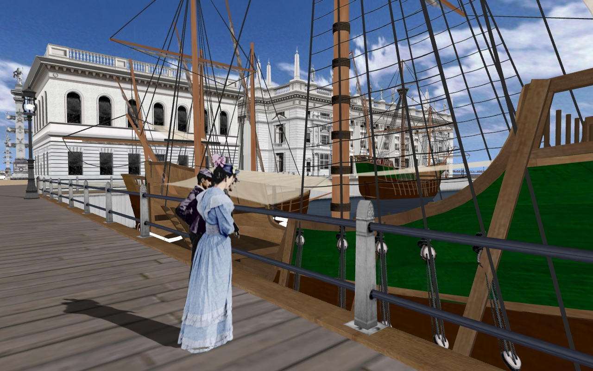

World's columbian exposition reconstruction
Real-time visual simulation technology has the potential to radically alter our understanding of historic urban environments. Unlike fixed computer animations, real-time technology allows interactive exploration of the modeled site, thereby creating unprecedented opportunities for experiential interpretation and innovative pedagogy.
The World’s Columbian Exposition of 1893 is a perfect test case for the educational applications of interactive computer models. The first file on the exposition model was opened in 1997 under the auspices of UCLA’s Urban Simulation Team. The project is now supported by IDRE. Plans for dissemination beyond the UCLA campus have yet to be determined. Inquiries from instructors, scholars, or institutions interested in collaboration or educational applications are welcome and should be directed to Lisa M. Snyder (lms@idre.ucla.edu). Special thanks to The Brinson Foundation for supporting the work on the South Pond, Wooded Island, and the state buildings; and to the Museum of Science and Industry in Chicago for providing opportunities to share this project in public presentations. All content provided on this site is for educational use only; all rights reserved by the UC Regents.
The images below were captured from the real-time computer model during an interactive flight session.
 The South Pond area showing the Convent of La Rabida and the Caravels. The South Pond area showing the Convent of La Rabida and the Caravels. |
The Caravels. |  The Agriculture Building by McKim, Mead and White. The Agriculture Building by McKim, Mead and White. |
 The Manufactures Building designed by George Post. The Manufactures Building designed by George Post. |
|
 Festival Hall, one of the many music venues on the fairgrounds. Festival Hall, one of the many music venues on the fairgrounds. |
 A view of Manufactures from the Rose Garden on Wooded Island. A view of Manufactures from the Rose Garden on Wooded Island. |
 The Horticulture Building as seen from Wooded Island. The Horticulture Building as seen from Wooded Island. |
 The Woman’s Building designed by Sophia Hayden, the only woman responsible for one of the main exhibition halls. The Woman’s Building designed by Sophia Hayden, the only woman responsible for one of the main exhibition halls. |
 The Illinois State Building with Fine Arts visible to the right. The Illinois State Building with Fine Arts visible to the right. |
 Now known as the Darrow Bridge, the revetments of this structure are still on site today. Now known as the Darrow Bridge, the revetments of this structure are still on site today. |
 The Wisconsin State Building The Wisconsin State Building |
 The Fine Arts Building from the lagoon. The Fine Arts Building from the lagoon. |
 The north face of the Fine Arts Building. The north face of the Fine Arts Building. |
 The interior of the Fine Arts Building combined classical detailing with modern building technology. The interior of the Fine Arts Building combined classical detailing with modern building technology. |
 The row of State Buildings across from the Fine Arts Building as seen from the elevated Intramural Railway. The row of State Buildings across from the Fine Arts Building as seen from the elevated Intramural Railway. |
 The Maine State Building. The Maine State Building. |
 The Massachusetts State Building. The Massachusetts State Building. |
 The Louisiana State Building. The Louisiana State Building. |
Fine Arts, as seen from the second floor porch of the Louisiana State Building. |
 The Street of Cairo on the Midway Plaisance. The Street of Cairo on the Midway Plaisance. |
{kind=link}